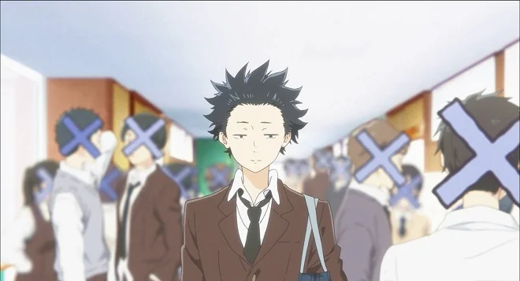
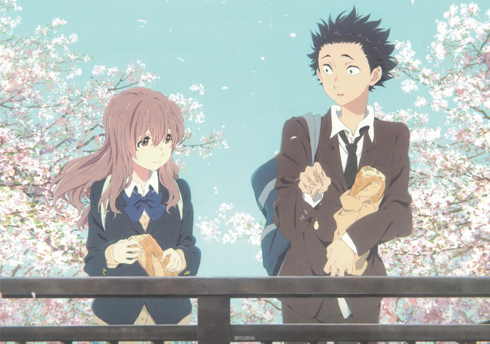
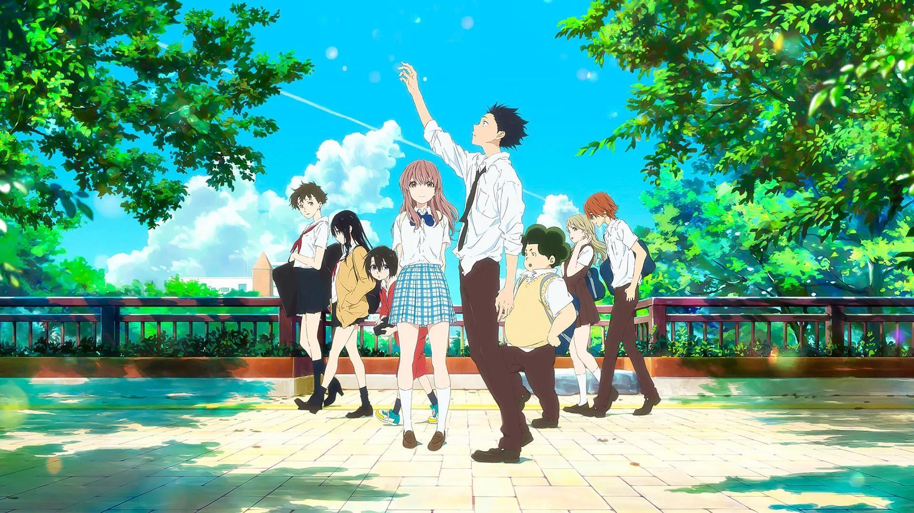
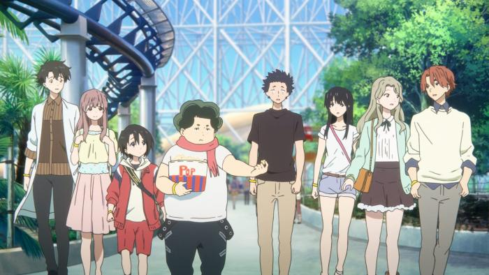
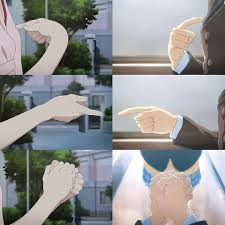

Descuento del 20% en entradas para parejas por San Valentín.





La historia gira en torno a Shoya Ishida, un chico con problemas para comunicarse que en su
niñez acosó cruelmente a Shoko Nishimiya, una nueva compañera de clase sorda. Años más tarde,
atormentado por la culpa y el aislamiento social, Shoya busca redimirse. Decide aprender el
lenguaje de señas para acercarse a Shoko, pedirle perdón y tratar de reparar el daño que le
causó. La película explora temas profundos como el bullying, la discapacidad auditiva, la salud
mental y la posibilidad de redención personal.
Convertido en un estudiante de secundaria solitario, Shoya decide aprender el lenguaje de señas para
encontrar a Shoko, pedirle disculpas sinceramente e intentar devolverle la felicidad que él mismo le
arrebató en el pasado.
Una Voz Silenciosa explora de forma profunda temas cruciales para los jóvenes como las duras
consecuencias del bullying, la importancia de la salud mental, la empatía hacia la discapacidad
auditiva y la posibilidad de perdonarse a uno mismo.